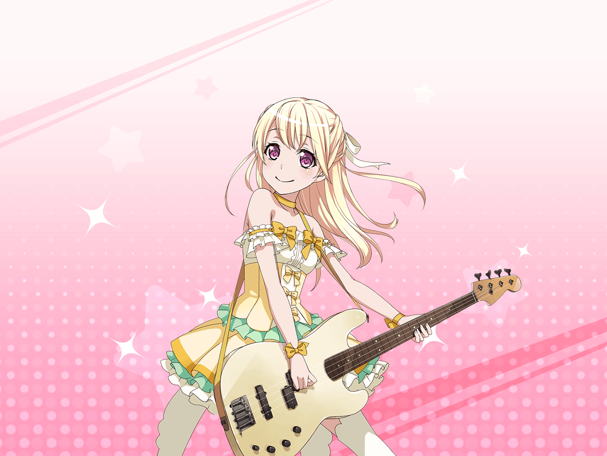

千聖
あ、お疲れさまです。
どうしたんですか、こんなところで？
千聖
私？ 私はただ、リハーサル前の
息抜きに休んでいるだけですよ
千聖
なんでも落ち着いて臨むのは、
大事なことですからね
千聖
深呼吸とかして自分をリラックスさせると、
リハや本番でも自信を失わずに済むんですよ
千聖
え？ ライブの成功を願っているんだね、ですか？
千聖
そんなの当り前ですよ。
ライブに来てくれたファンのみなさんに
楽しんでいただきたいですもの
千聖
それに、私がみんなの足を
引っ張るわけにはいきませんから
千聖
だから、これくらい完璧にこなしてみせます
千聖
え？ ライブ衣装が似合ってる？
ふふふ、ありがとうございます
千聖
私もこの衣装、気に入ってるんです
千聖
やっぱり女の子なら、
かわいいお洋服に憧れるものですから
千聖
ふふふ、だから、この衣装を着ることができて、
とっても嬉しいです
千聖
それにしても……
なんだか不思議な感じですね
千聖
あなたと話していると、なぜか落ち着くんです。
安心するって言ったほうがいいんでしょうか……
千聖
次のライブも楽しみにしていてくださるんですか？
千聖
ありがとうございます
千聖
{{userName}}さんや……
まわりのスタッフさんが裏から支えてくれるから
私はいつでも全力で演奏できるんです
千聖
もう一度、お礼を言わせてください、ありがとうございます。
それではライブ、行ってきますね